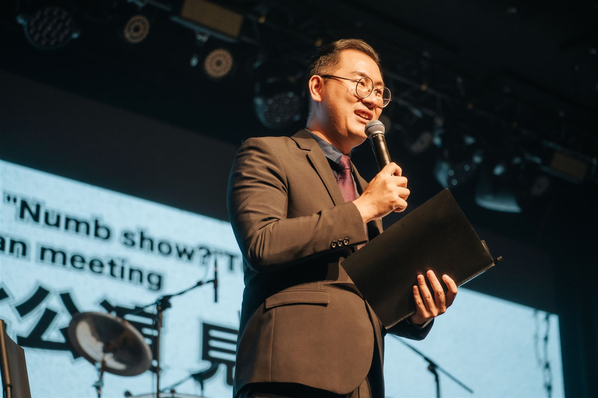
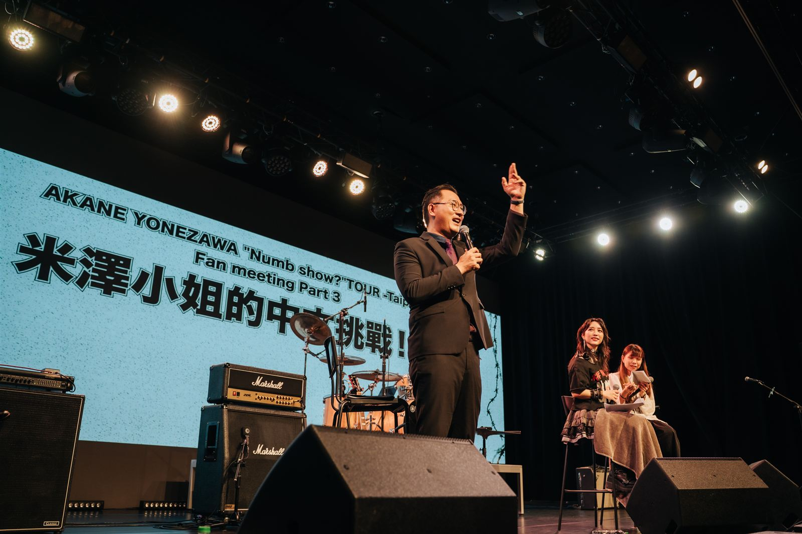
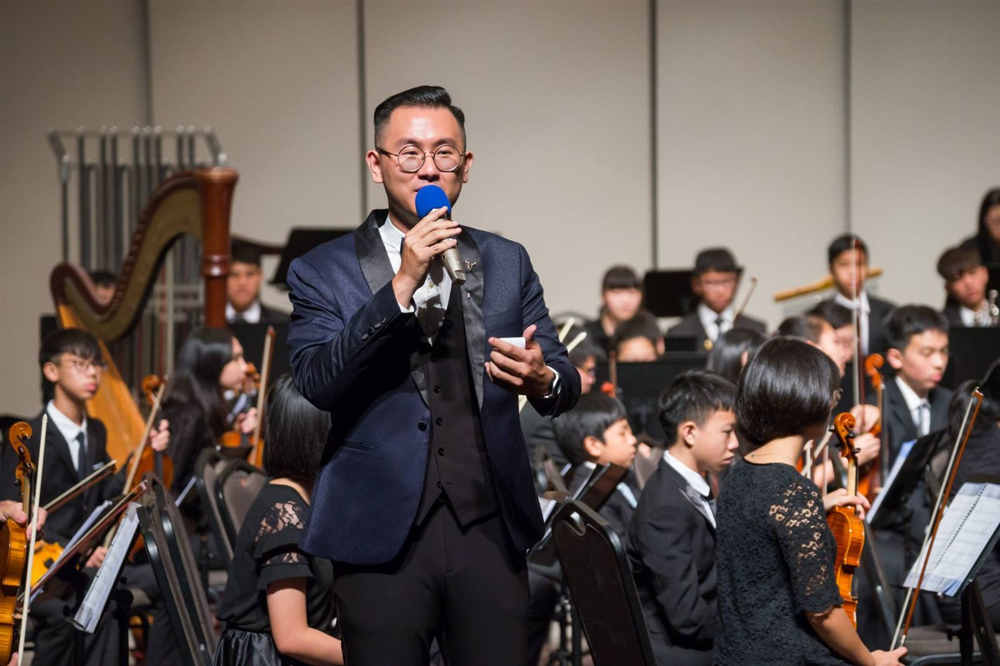
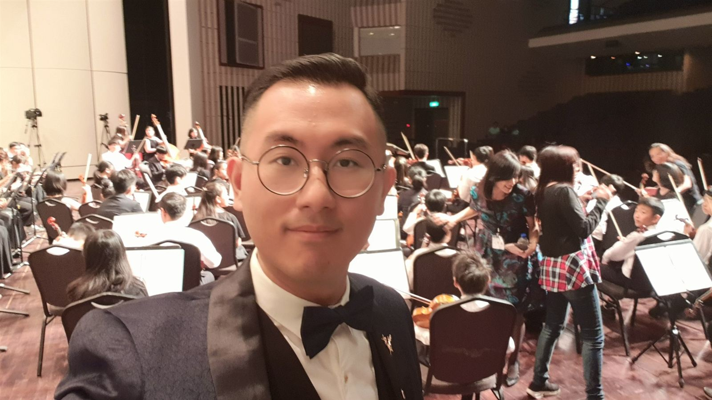
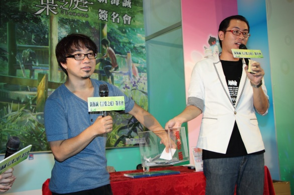
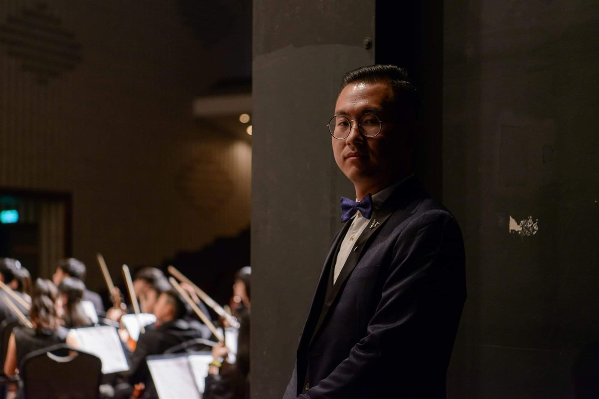
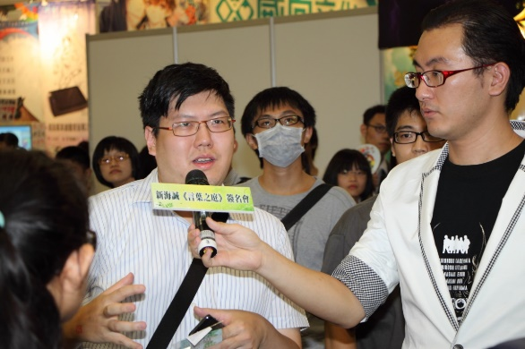
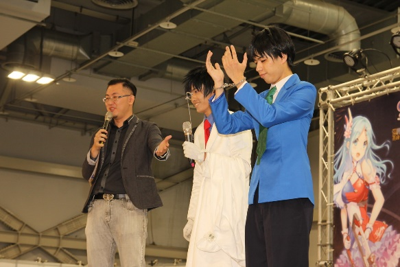

專業文化類活動主持人，擅長記者會、音樂會、簽名會、沙龍講座、脫口秀、映後座談、角色扮演比賽活動主持，也曾擔任競技比賽主播、音樂會導聆等。
文化系イベントを専門とするプロの司会者。記者会見、コンサート、サイン会、サロントーク、トークショー、上映後トーク、コスプレコンテストなどの司会を得意とし、競技大会の実況やコンサートのナビゲーターも務めています。

記者會、見面會、音樂會、講座或比賽，歡迎來信或私訊。請附上活動日期、地點、活動類型與來賓，大熊會盡快回覆。
記者会見、ファンミーティング、コンサート、トークイベント、大会など、お気軽にメールまたはメッセージでご連絡ください。開催日・会場・イベント内容・ゲストをお知らせいただければ、折り返しご連絡いたします。
點一下就能篩選場次
點長條看那一年







依年份由新到舊排列